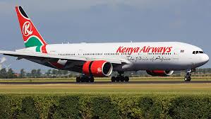

INFRASTRUCTURE
Kenya's infrastructure is a key part of the country's economic growth, and includes transportation, energy, water, and telecommunications:
Transportation: Kenya's transportation network is extensive, but uneven, and is considered superior to its neighbors. Nairobi is the largest city between Cairo and Johannesburg, and the Port of Mombasa is a major gateway for the region.
Cell signals: Cell signals: Over 90% of Kenya's population has access to GSM cell signals.
Air transport: Kenya has a successful public-private partnership in air transport.

Infrastructure networks: Kenya's infrastructure networks are largely isolated from those of its neighboring countries. Road connections with Ethiopia, Tanzania, and Somalia are of very low quality.
Infrastructure sector: The infrastructure sector is key to Kenya's economic growth, as articulated in the country's Vision 2030.
State Department of Infrastructure (SDol): The SDol is one of five functional state departments under the Ministry of Transport, Infrastructure, Housing, Urban Development, and Public Works.
| Infrastructure | Ministry |
|---|---|
| Energy | The Ministry of Energy and Petroleum |
| Water | Ministry of Water, Sanitation and Irrigation |
| Transport | Ministry of Roads and Transport |
| Communication | Ministry of Information, Communications and the Digital Economy |
| Ministry of Lands, Public Works, Housing, and Urban Development. | Housing,Building research,Urban planning and developement |